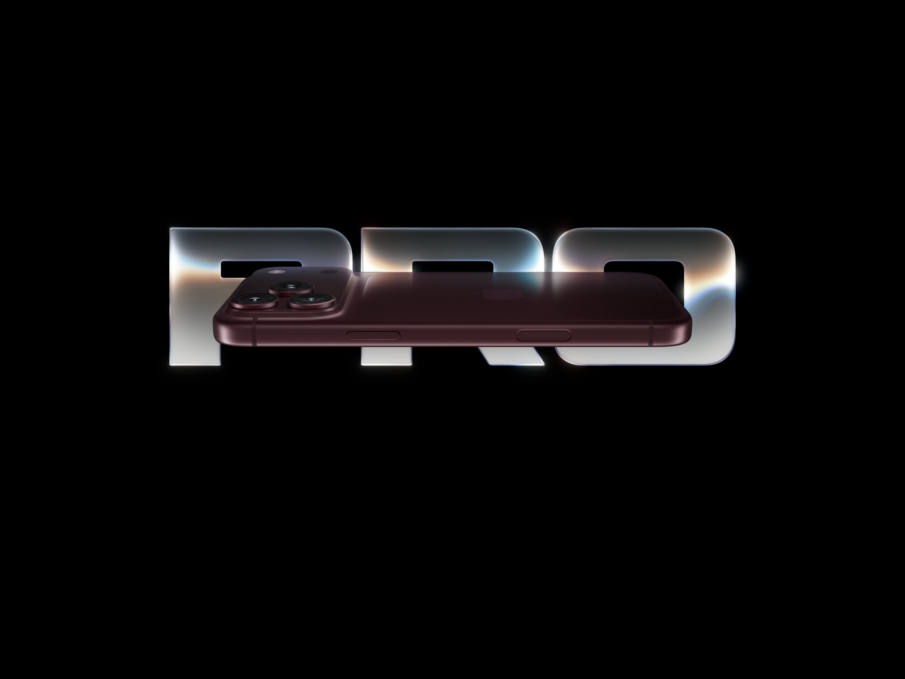
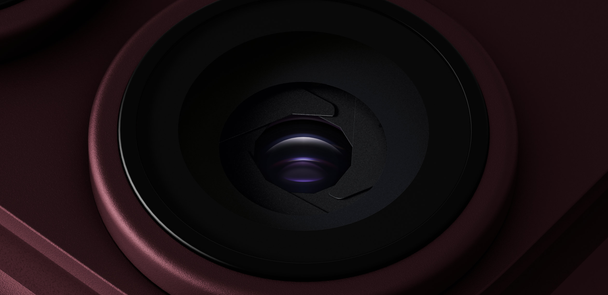
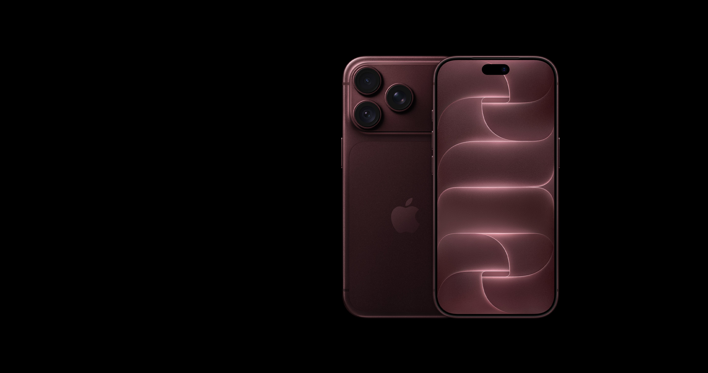
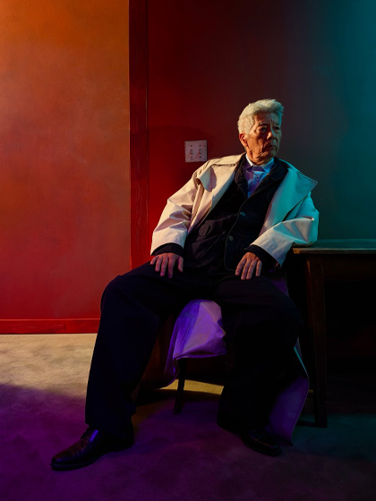
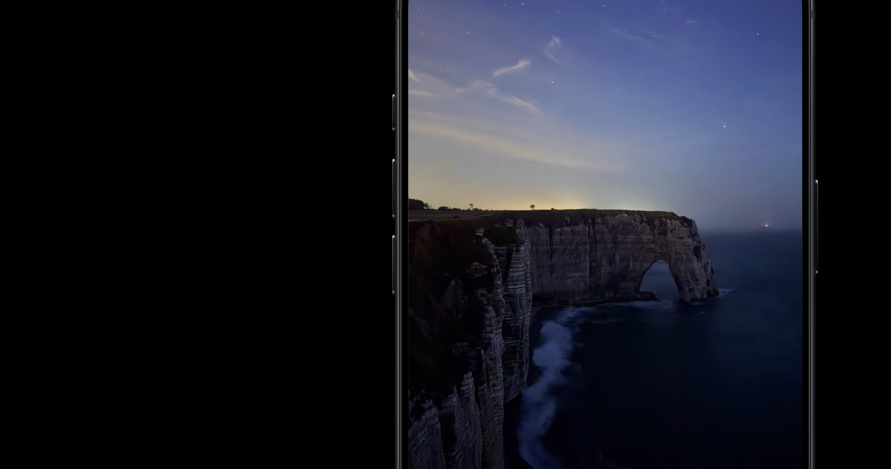
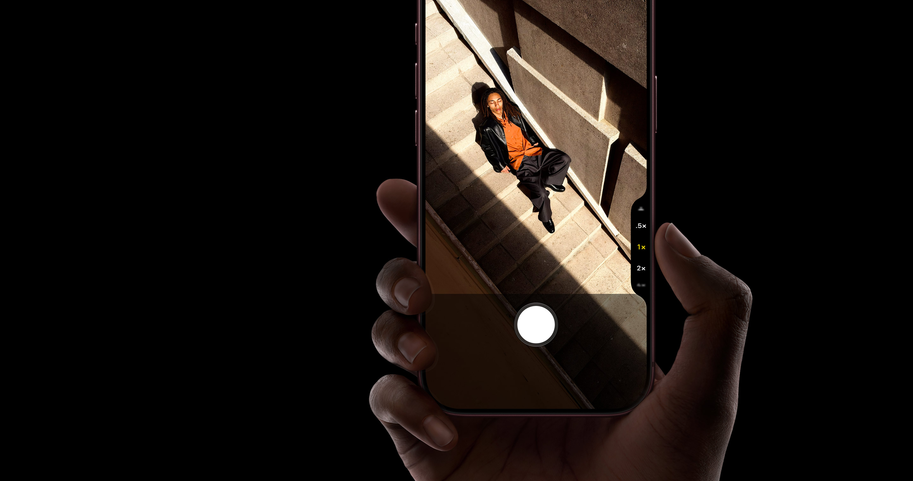
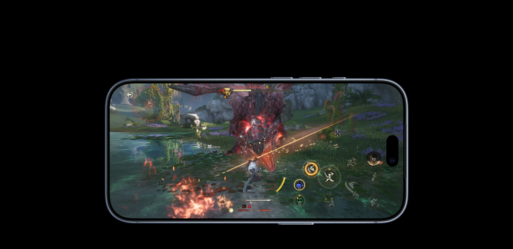
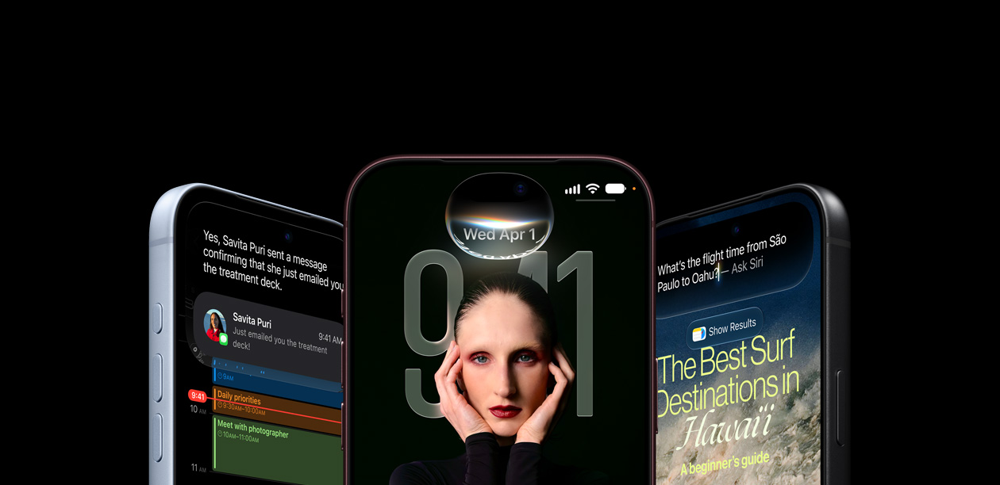
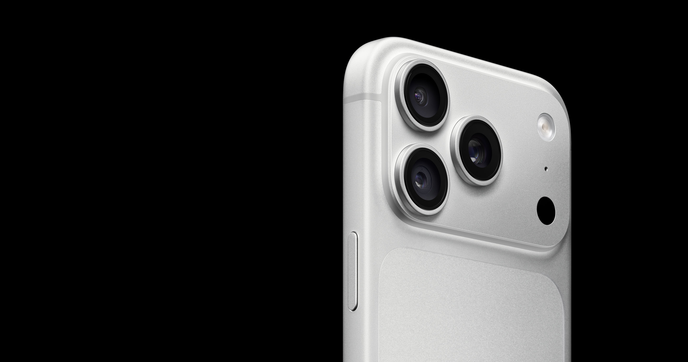
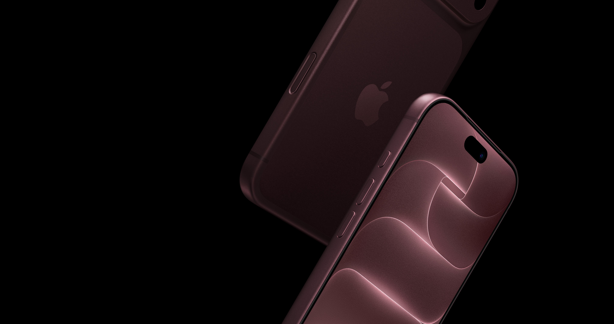

iPhone 18 Pro
Pro，全方位。
Get the highlights.

从镜头特写进入摄影章节。细节先出现，参数随后解释。
Design
Our finest
unibody of work.

Pro camera system
Eye-opening
control.
Variable aperture
Control the light.
Shape the depth.

f/1.48More control. In every frame.

Variable aperture

Camera Control

Performance
A20 Pro.
Power that stays.
Built for what
comes next.
Thermal design and performance, revealed as the product fills the frame.
Battery
More life.
More possibilities.
Keep going.
The explanation replaces the title after the visual has established the product.
See what you gain.
iPhone 15 Pro → iPhone 18 Pro
Choose a prior model to compare. Values in this shortened study link to the official comparison.
See the original comparison ↗Designed for your everyday.

Shared features

Choose your iPhone

Materials and the environment
页面机制学习
本地保留产品影片、亮点进度轮播、7 项细节展开/收起、颜色与景深比较、双向 sticky 媒体/标题交接、横向卡片和后段明暗章节。相机为官方滚动视频；性能与续航使用官方静帧保持同类滚动叙事，时序和缩短内容为近似。
逐项对照 ↗素材来源 ↗返回拆解 ↗